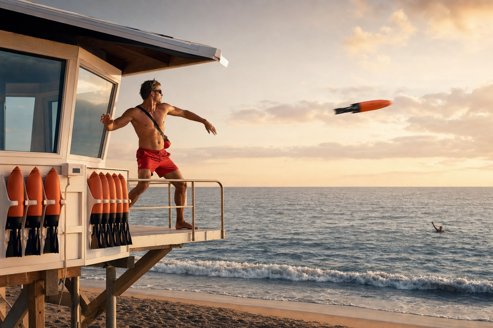
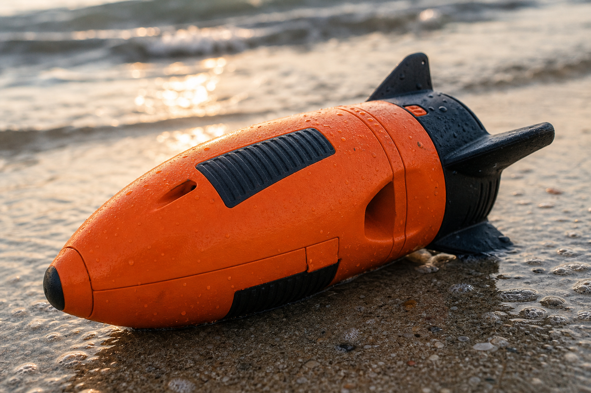

What makes it interesting
It is not a prettier ring buoy.
Life Launch only matters if it changes the sequence: quicker grab, better throw, faster repeat attempt, earlier flotation contact, then rescue follow-through.
Premium water rescue concept
Life Launch reframes the opening seconds of a water emergency: mounted access, a cleaner athletic throw, visible flotation after impact, and a calmer premium surface for teams that protect beaches, docks, and waterfront guests.

The story
Most public rescue hardware still asks the responder to make an awkward first toss with a shape that was never designed to fly well. Life Launch is built around the opposite idea: make the first move cleaner, earlier, and easier to repeat from the station.
The point is not gadget theater. The point is a more credible first-response sequence for aquatic teams that need range, visibility, and faster contact.

How the system works
Visual system
Instead of one hero image doing all the work, Life Launch gets legible through four views: tower system, throw motion, product body, and in-water support state.


What makes it interesting
Life Launch only matters if it changes the sequence: quicker grab, better throw, faster repeat attempt, earlier flotation contact, then rescue follow-through.
Design language
The site is built to feel like serious coastal equipment. Less gadget startup energy. More marine hardware, disciplined visuals, and credible use-case framing.
Who it is for
Primary fit
Guarded beaches and elevated stations where fast first contact can change the whole rescue sequence.
Operational fit
Waterfront properties that need visible rescue readiness without relying only on old awkward throw gear.
Hospitality fit
Premium guest-facing environments where safety hardware still needs to look intentional and high trust.

Why this site feels complete
Current status
This site is intentionally built as a premium concept surface. It does not claim certification, field validation, or commercial availability. It exists to make the idea understandable and beautiful while the real proof stack still needs to be built.